Advance Settings

- Organization: You can input your organization's location here.
-
Leave accrual
By enabling this option, users will have their leaves accrued every month rather than allotted on the first day of the year. -
HR approvers
You can add an HR Approver here. -
Additional approvers
Give applicants the option to choose another approver(s) in case their first-line manager is unavailable. -
Auto Approvals.
leaves can approve automattically without permission. -
Second level approval for leave cancellation.
HR is Second level approver for Leave Cancellation. -
Select the leave type to carry forward
At the end of the year, one of the leave types can be carried forward to the next year. -
Add Comp off (off in lieu) policy (in days)
Comp (Compensatory) Off leave (also called compensatory off, comp off, or off-In-Lieu) allows team members to take time off in lieu of overtime pay if they've worked under irregular circumstances, such as: when business is closed, holidays, overtime hours, etc. Users are allowed to consume their comp off with X days from the day they worked under irregular circumstances. -
Avail Comp off (off in lieu) policy (in days)
Comp (Compensatory) Off leave (also called compensatory off, comp off, or off-In-Lieu) allows team members to take time off in lieu of overtime pay if they've worked under irregular circumstances, such as: when business is closed, holidays, overtime hours, etc. Users are allowed to consume their comp off with X days from the day they worked under irregular circumstances. -
Enable external users
You can allow external users to use this Time-off Manager app i.e. You can add them as guest / external user which is added in your office 365 tenant -
Integration with Outlook Calendar
Overview
- Team Events — creates the leave event on the calendars of the employee and/or selected roles (Manager, HR, Manager of Manager), or on a shared mailbox calendar, or both.
- Department Calendar — creates the leave event on a calendar associated with the employee's department, using a department-to-calendar mapping that you configure.
Enabling the Integration
- Go to Settings from the left navigation.
- Under the Advanced column, click Integration with outlook calendar.
- A panel opens with two tabs: General and Department Calendar Mapping (the second tab appears only after Department Calendar is enabled — see Section 5).
- On the General tab, use the toggle at the top right to turn the integration On.
Event Creation Method
- Built-in (no Flow needed) — Time-off Manager 365 creates the Outlook event directly. No Power Automate flow needs to be built or maintained.
- Power Automate — event creation is handed off to a configured Power Automate flow, giving you more flexibility to customize the automation if the built-in method does not meet your requirements.
Team Events (Create events in)
- Team Events — creates the leave event based on role (employee, manager, HR, etc.) or a shared mailbox, configured under Invite to the event.
- Department Calendar — creates the leave event on the calendar mapped to the employee's department (covered in Section 5).
Invite to the Event
When Team Events is enabled, the Invite to the event dropdown controls who receives the Outlook event. Three choices are available:- Employee/Manager/HR/Manager of Manager (own calendars) — the event is created on the calendars of the selected roles.
- A shared mailbox calendar — the event is created on a specified shared mailbox's calendar.
- Both — the event is created for the selected roles and on the shared mailbox calendar.
- Role-based invitees
- User (the employee who is on leave)
- Manager
- HR
- Manager of Manager
- Shared mailbox invitee
- Enter the shared mailbox email address in the Shared mailbox calendar field (for example, timeoffsharedmailbox@yourdomain.com).
- Click Load Calendars to retrieve the list of calendars available on that mailbox.
- Select the target Calendar from the dropdown.
- Click Save.
Department Calendar
Configuring Department Calendar Mapping
- Adding a mapping manually
- Click Add. The Add Department Calendar Mapping panel opens.
- From the Department dropdown, select the department you want to map.
- From the Calendar for this department dropdown, choose whose calendar the department's leave events should be created on:
- Employee's own calendar (+ department members) — invites the same Employee/Manager/HR/Manager-of-Manager targets configured under Settings > General > Invite to the event, plus every other user whose Department matches this one, so colleagues in the same department see each other's leave. This list is resolved fresh from the user directory each time, so there is no list to maintain, and no extra permission is needed for it.
- A specific user's calendar — routes events for this department to one nominated user's calendar.
- A shared mailbox calendar — routes events for this department to a shared mailbox's calendar (same setup as described in Section 4.1.2).
- Use the Active toggle to turn this mapping On or Off without deleting it.
- Review the Summary panel, which echoes back the selected Department and Calendar for this department.
- Click Submit to save the mapping.
- Adding mappings in bulk
- Managing existing mappings
How Events Are Created
- An employee submits a leave request in Time-off Manager 365.
- The request goes through the normal approval workflow.
- When the leave request is approved, Time-off Manager 365 automatically creates an Outlook calendar event for the approved leave dates.
- If Team Events is enabled, the event is created on the calendars of the selected roles and/or the configured shared mailbox, as set under Invite to the event.
- If Department Calendar is enabled, the event is additionally created on the calendar mapped to the employee's department, based on the Department Calendar Mapping table.
The Integration with Outlook Calendar feature automatically creates events in Outlook calendars whenever an employee's leave request is approved. This gives managers, HR, and team members visibility into who is on leave, directly from their Outlook calendar, without needing to check Time-off Manager 365 separately.
The feature is configured from Settings > Advanced > Integration with Outlook calendar, and supports two independent event-creation targets:
Both options can be enabled together, so an approved leave can create events in more than one place at once.
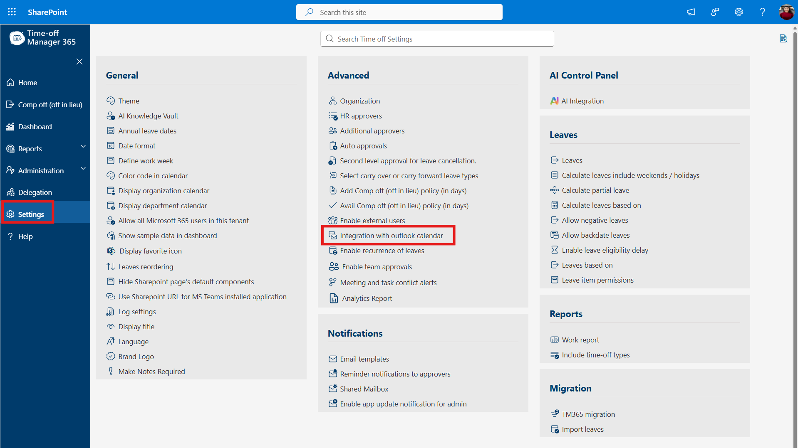
Figure 1: Settings page — Integration with outlook calendar is listed under Advanced settings.
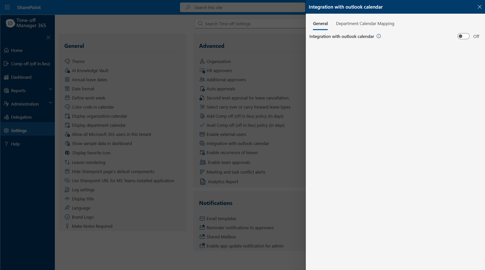
Figure 2: Integration with outlook calendar panel — toggle is Off by default.
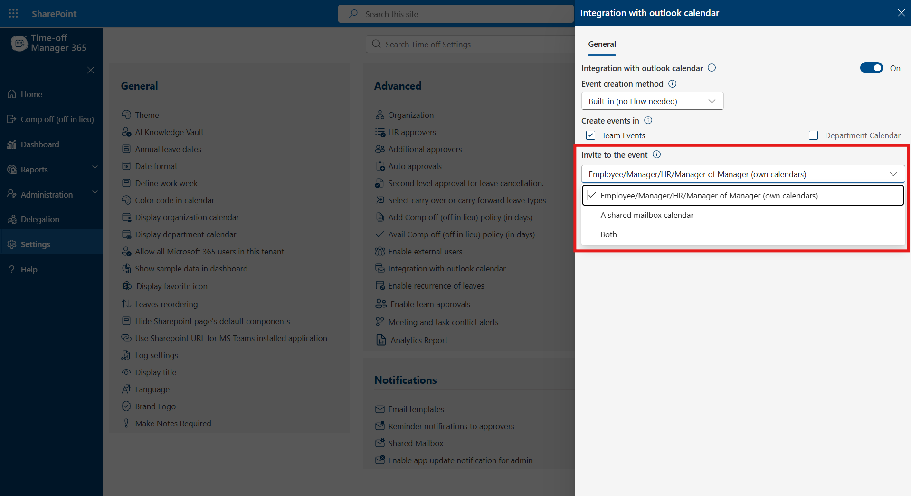
Figure 3: Once switched On, the Event creation method, Create events in, and Invite to the event options become available.
Once the integration is switched On, an Event creation method dropdown appears. This determines how the Outlook event is technically created:
Note:
Built-in is the simpler option for most organizations, since it requires no additional configuration outside of this panel. Choose Power Automate only if you need custom logic that the built-in method does not support.
Under Create events in, two checkboxes control where events are created:
These two options are independent and can be selected individually or together.
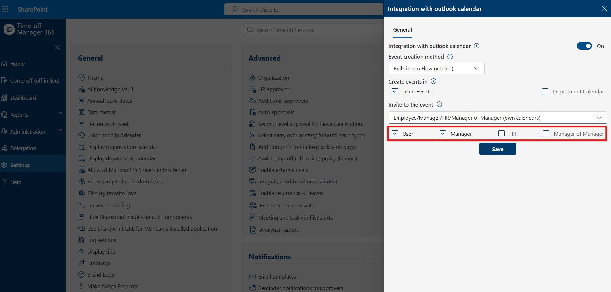
Figure 4: Invite to the event dropdown, showing the three available options.
Selecting Employee/Manager/HR/Manager of Manager (own calendars) reveals individual checkboxes so you can choose exactly which roles receive the event on their own calendar:
Check the roles that should receive the event, then click Save.
Selecting A shared mailbox calendar requires a shared mailbox with the appropriate calendar permissions. Configure it as follows:
Note:
The shared mailbox must already exist in Microsoft 365 and the app must have the necessary calendar permissions on it before events can be created there.
Enabling the Department Calendar checkbox under Create events in allows leave events to also be created on a calendar tied to the employee's department, rather than (or in addition to) the role-based or shared-mailbox targets configured for Team Events.
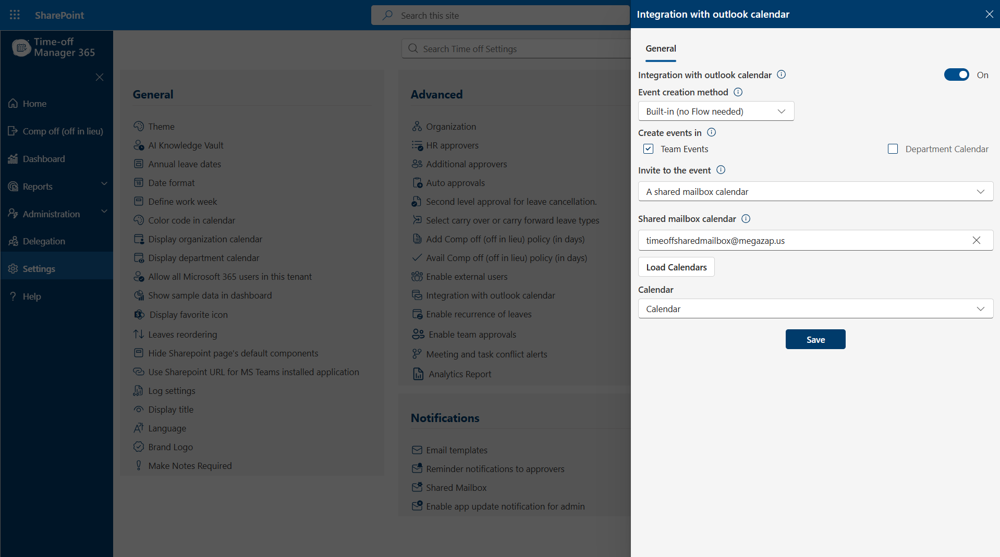
Figure 7: The Department Calendar checkbox, unchecked, alongside Team Events.
Once Department Calendar is checked and the configuration is saved, a new Department Calendar Mapping tab appears at the top of the panel, next to General.
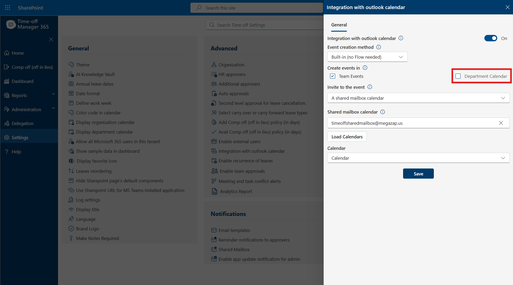
Figure 8: Department Calendar checkbox checked — this activates the Department Calendar Mapping tab.
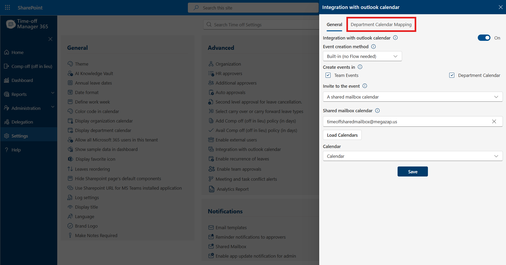
Figure 9: The Department Calendar Mapping tab becomes visible at the top of the panel.
Open the Department Calendar Mapping tab to define which calendar each department's leave events should be created on. This tab has Active and Inactive sub-tabs, a search box, and two ways to add mappings: Add (manual entry) and Bulk Upload.
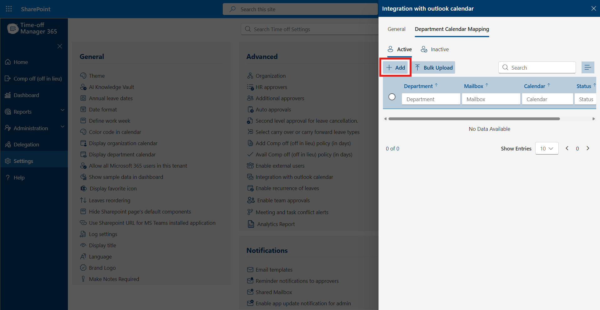
Figure 10: Department Calendar Mapping tab, showing the Active list (empty), Add, and Bulk Upload options.
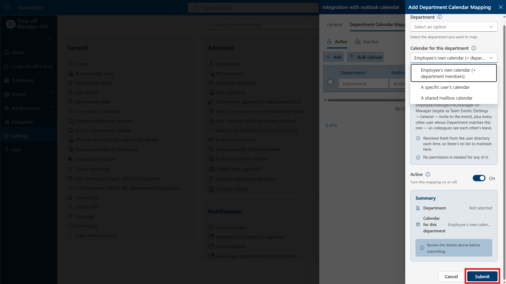
Figure 11: Add Department Calendar Mapping panel — Department dropdown, Calendar for this department options, Active toggle, and Summary.
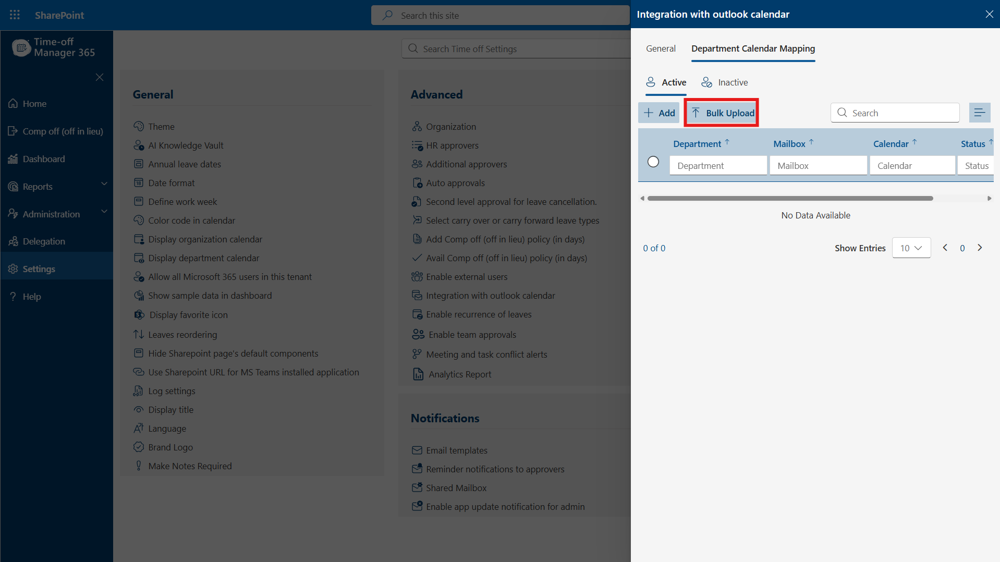
Figure 12: Calendar for this department dropdown expanded, showing all three routing options, with Submit highlighted.
For organizations with many departments, click Bulk Upload instead of Add to import multiple department-to-calendar mappings at once (for example, via a spreadsheet template), rather than creating each mapping individually.
Saved mappings appear in the table under the Active tab, with columns for Department, Mailbox, Calendar, and Status. Use the search box to locate a specific mapping, and switch to the Inactive tab to view mappings that have been turned off.
Mappings can be edited or deactivated at any time; deactivating a mapping stops department-based event creation for that department without deleting the configuration.
Once the integration is enabled and configured, no further action is required from end users. The event creation flow works as follows:
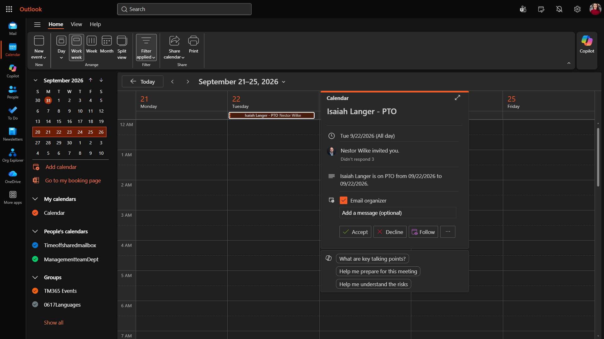
The event is created according to the configuration in this panel:If both Team Events and Department Calendar are enabled, both sets of events are created for the same approved leave, so the leave can appear on multiple relevant calendars simultaneously.
-
Show Time off requests in Microsoft outlook calender.
When we apply leave, Outlook Calendar is blocked. -
Enable recurrence of leaves .
If enabled, you can find control of recurrence on the top right corner after clicking on 'new request' on home page of the application -
Enable Team Approvals
If enabled, the 'Team Approvals' section will be visible on the home page, allowing higher-level managers (managers of managers) to review and act on team requests. -
Meeting and Task Conflict Alerts
Overview
Meeting and Task Conflict Alerts helps managers and employees spot scheduling clashes before a leave request goes through. When this setting is turned on, Time-Off Manager 365 checks the employee's Outlook meetings and assigned tasks that fall within the requested leave period, and shows a warning if it finds any conflicts. This gives the employee a chance to review their commitments — and add a note for their approver — before submitting the request, which helps cut down on last‑minute rescheduling and approval back‑and‑forth
Note:
This is an advisory alert only. It does not block the leave request — employees can still continue and submit even if conflicts are found.
Enabling the Setting
To turn on conflict alerts for your organization:
- Go to Time-Off, then select the Settings (gear) icon.
- Under the Advanced section, click Meeting and task conflict alerts.
- In the dialog that opens, switch the Meeting and task conflict alerts toggle to On.
- Close the dialog. The change applies immediately — no additional save step is required.

The Meeting and task conflict alerts option is located under Time-Off → Settings → Advanced.

Toggle Meeting and task conflict alerts to On to enable conflict checking during leave requests.
Pro Tip
- • If you'd rather not show conflict warnings to employees at all, simply leave (or switch) this toggle to Off — leave requests will then be submitted without any conflict check.
- • This setting is organization-wide: turning it on or off applies to every employee applying for leave, not just one user.
What Employees See
Once enabled, the alert appears automatically the moment an employee submits a leave request that overlaps with an existing Outlook meeting or an assigned task. Here's how it looks in practice, using a PTO request for August 24, 2026:
- The employee goes to Time-Off → Apply Leave and fills in the leave details.
- They select the Start Date and End Date for the requested leave (for example, 08/24/2026 to 08/24/2026) and click Submit.
- If the system finds an overlapping meeting or task during that period, a Leave Conflicts window appears, listing each conflict under Meetings and Tasks along with its date and time.
- The employee can review the details, click Cancel to adjust their dates, or click Continue to proceed with the leave submission anyway.
- • Encourage employees to check the Leave Conflicts window carefully before clicking Continue — reassigning or rescheduling a flagged meeting/task beforehand avoids surprises for teammates while they're out.
- • If an employee sees a conflict for a task or meeting that's already been handled (e.g., reassigned), it's safe to click Continue — the alert is just a heads-up, not a hard rule.

To include a location, click on the +Add button.

Enter the details and then save by clicking on the "Save" button.


Auto approval of first approvers:Enable automatic approval for specific leave types and/or job titles at the first level.
Auto approval of secondary approvers:Implement automatic approval for designated leave types and/or job titles at the second level.
Auto approval of tertiary approvers:Third level auto approval of selected leave types and/or selected job titles
Auto approval exception:Please specify the name of the leave type(s) that you do not want to be automatically approved.


Example: applying for PTO on August 24, 2026 surfaces a scheduled 1:1 meeting and an assigned task that fall within the leave period.
Pro Tip
Frequently Asked Questions
Does this alert block leave submission? No. It's an informational warning only — employees can still submit the request after reviewing it.
What does the system check? It checks the employee's Outlook meetings and any tasks assigned to them (via Task 365) that fall within the selected leave dates.
Can this be turned off for specific employees only? No — the toggle is an organization-wide setting under Advance Settings and applies to all leave requests.
What if no conflicts are found? The leave request is submitted normally, with no dialog shown.